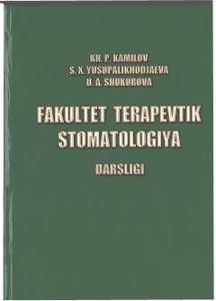

FTFakultet terapevtik stomatologiya fanidan tibbiyot oliygohlari talabalari uchun rasmiy darslik.
Ushbu darslik Oliy va o'rta maxsus ta'lim vazirligi tomonidan tasdiqlangan bo'lib, fakultet terapevtik stomatologiya fanining asosiy stomatologik kasalliklarini klinik tekshirish, tashxislash, davolash va profilaktika qilish usullarini o'z ichiga oladi. Kitob tish kariesi, nokaries kasalliklari va tish pulpasi patologiyalarini batafsil yoritib beradi. Oliy o'quv yurtlarining stomatologiya yo'nalishi talabalari va shifokorlar uchun mo'ljallangan.